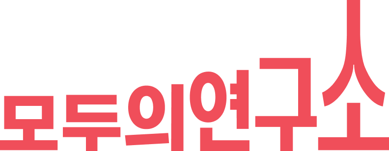
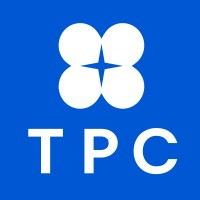
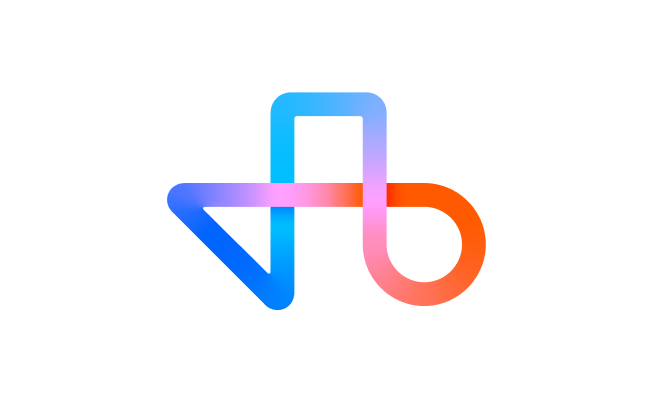
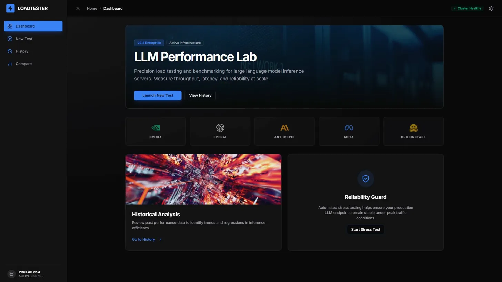
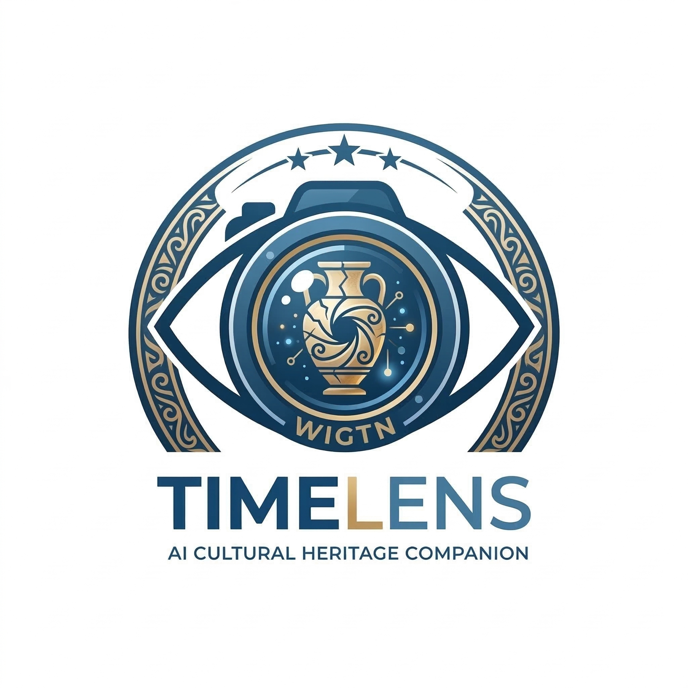
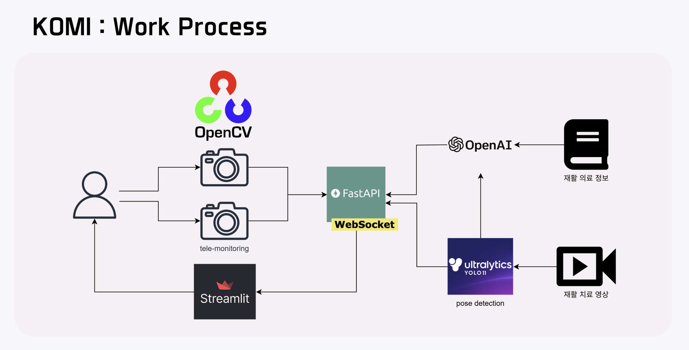
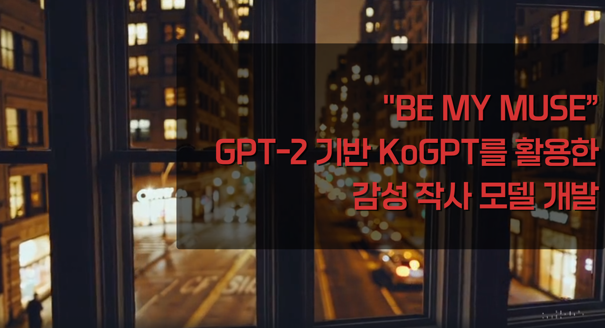
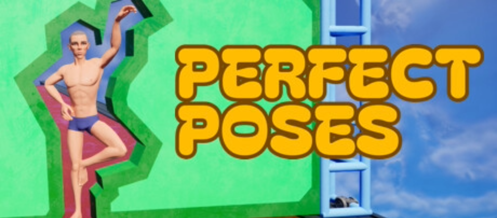
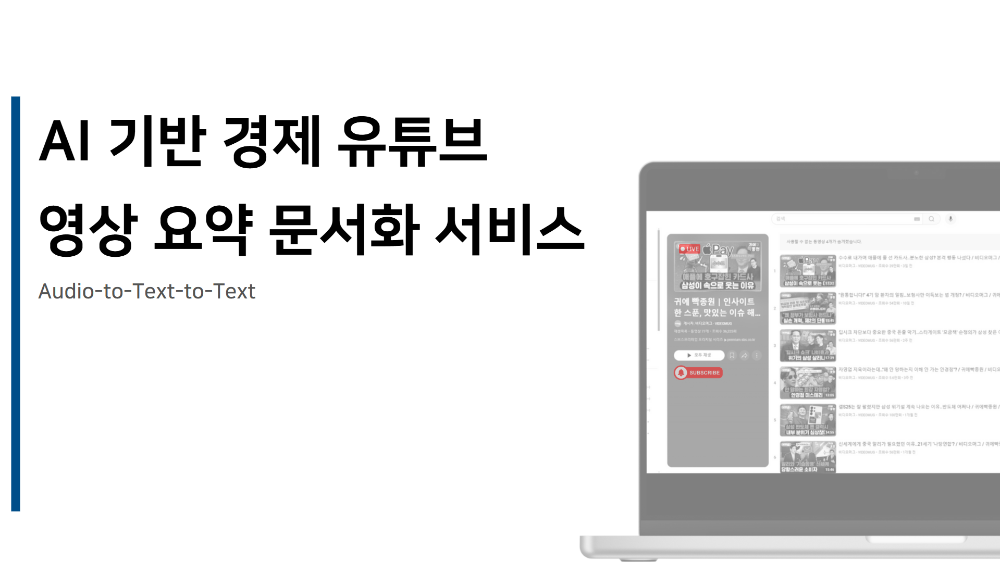

[AI Sales Enablement Platform] SoundMind AI Ecosystem
고객 문서를 분석하여 맞춤형 RAG Pipeline을 자동 생성·Docker 배포하는 AI Sales Enablement Platform. 신규 엔진 배포 리드타임 2주→5분 달성, MSA 9 Projects · 161 APIs · 최대 99개 Pipeline 동시 운용.
Welcome to my portfolio
AI를 연구하고, 만들고, 서비스합니다.
모델 설계부터 프로덕션 파이프라인까지.
건축공학 전공 후 10년간 건설 현장에서 다중 이해관계자 조율과 프로젝트 관리를 수행한 경험은,
AI Research Engineer로서 MSA 경계 설계와 복잡한 파이프라인 아키텍처 의사결정에 그대로 이어졌습니다.
현재 BrainCrew Research Engineering 팀 Engineering Part Lead로 합류했으며, Advanced RAG Pipeline, Admin Console, B2B SaaS Platform 등 AI 시스템 설계 및 개발을 해왔습니다.
또한 AI-Native Builder Crew WIGTN을 리드하며 Context Engineering 및 Harness Engineering 등,
최신 이론들을 적용한 Agentic System을 연구하고 있습니다.
이 과정에서 AI-Native 개발 도구 WIGTN-Coding과
한국 공공기관 문서를 기준으로 OmniDocBench(CVPR 2025) TEDS 평가 1위를 달성한 VLM 기반 파싱 모델 WigtnOCR을 오픈소스로 공개했습니다.
그리고 PSTN 환경(G.711 μ-law 8kHz)에서 실시간 양방향 음성 번역을 구현한 독자 아키텍처 WIGVO는
에코 루프를 소프트웨어만으로 제거하는 설계로, 연구 역량을 인정받아 ACL 2026 Demo Track에 채택되었습니다.
실무 경력
Research Engineering 팀 / Engineering Part Lead
Founder & Lead
AX 사업본부 / AI Research Engineer
주택사업본부 / Architectural Site Engineer
Head Office / Construction Project Manager
건축사업본부 / Architectural Site Engineer
연구 활동 및 커뮤니티
GPU-Accelerated Laboratory / Research Member
학력 사항
Bachelor's degree, Architecture Engineering
Associate's degree, Architecture Design
교육 및 수료
Fundamentals of Accelerated Data Science

연구를 위한 AI 활용 과정 (모두의연구소)

프롬프트 엔지니어링 과정 (The Prompt Company: Ph.D 강수진)

Data & AI Alignment Engineer 과정
수상 경력
Team WIGTN — WIGTN FLAKE: 목적 기반 동네 인텔리전스 플랫폼
'H-Silent' 층간차음재 현장 실증 주도, 국토교통부 1등급 인증 획득 기여
「건축현장에서 멘토링 도입을 통한 조직 몰입도 향상에 관한 연구」
자격증
한국데이터산업진흥원
Company Projects & Side Projects
고객 문서를 분석하여 맞춤형 RAG Pipeline을 자동 생성·Docker 배포하는 AI Sales Enablement Platform. 신규 엔진 배포 리드타임 2주→5분 달성, MSA 9 Projects · 161 APIs · 최대 99개 Pipeline 동시 운용.
Qwen3-VL-2B 모델을 한국 공공기관 문서 Data Parsing 맞춤 LoRA Fine-Tuning하여 Qwen3-VL-30B 모델을 OmniDocBench 기준 성능 초과 달성. 오픈소스 파서 Retrieval Hit@1, MRR@10 성능 1 Tier. HuggingFace Model 오픈소스 배포.
저음역대 PSTN 전화망에서 Echo Loop를 차단할 수 있는 아키텍처 개발. 실증 테스트 0/148건 성능 확인, ACL 2026 System Demonstration 1저자 채택.

비개발직군도 사용할 수 있는 LLM 서빙 성능 벤치마킹 도구. TTFT/TPOT/Goodput 시각화와 이중 교차 검증 시스템 구현. Ex-Google ML/AI 엔지니어로부터 콜드 아웃리치 수신.
Claude Code 기반 AI-Native 개발 워크플로우 자동화 플러그인. 7 Commands · 14 Agents · 7 Skills · 4 Hooks 구성. Quality Gate 자동 코드 리뷰와 3계층 메모리 시스템으로 개발 파이프라인 속도 3배 향상 달성.
사용자가 '하고 싶은 일'(카페 창업, 렌탈 가전 마케팅, 광고판 입지, 부동산 투자 등)을 선택하면, AI 전문가 패널이 부동산 시세·유동인구·카드매출·통신계약 4개 데이터셋을 교차 분석해 Top 3 동네 추천, 이상 시그널 자동 감지, 6개월 트렌드 예측을 수행. Snowflake Cortex × GPT-4o 하이브리드 오케스트레이션으로 Team WIGTN 4인 합작.

Google Global 해커톤 Gemini Live Agent Challenge 출품작. Gemini Live API + ADK 듀얼 파이프라인으로 음성·카메라 실시간 처리. Function Calling 4개로 라우팅 로직·인텐트 분류기·상태 머신을 대체.
Learning & Side Projects
MCP 표준으로 FPS 게임 개발용 AI 도구 3종을 통합 구현. 자연어로 총기 반동 궤적 생성(98.7% 시간 단축), 3D 맵 화이트박싱(75% 단축) 달성. Smithery.ai 배포.

YOLO11-Pose 관절 좌표 추출과 LangChain RAG 시스템을 연동한 실시간 운동 자세 피드백 서비스. RAGAS 평가 Context Precision/Recall 100%, Answer Relevancy 82% 달성.

KoGPT-2 모델을 7,439곡 가사 데이터로 Full Fine-Tuning하여 감성 작사 특화 모델 개발. KOTE 43개 감정 카테고리 기반으로 입력 키워드의 감성을 분석하고 맞춤형 가사를 생성.

24시간 해커톤에서 YOLO11-Pose 실시간 자세 인식과 Unreal Engine 5를 연동한 자세 추론 게임을 E2E 완성. 제시된 포즈와의 유사도를 Cosine 분석으로 점수화, 30fps 실시간 처리, API 응답 50ms 미만 달성.

유튜브 URL 입력만으로 경제 영상을 자동 요약하는 E2E 파이프라인 구현. Whisper-large-v3로 STT 처리 후 Gemma-2 QLoRA 4-bit 양자화 모델로 단일 GPU에서 요약 생성.